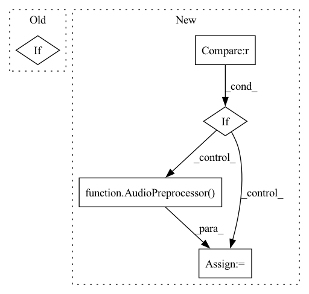

Pattern ID :18373
Before Change
text_len = torch.LongTensor([self.feature_list[index][1]]).to(self.device)
speech = torch.transpose(torch.Tensor(self.feature_list[index][2]), 0, 1).to(self.device)
speech_len = torch.LongTensor([self.feature_list[index][3]]).to(self.device)
if self.spemb:
spemb = torch.Tensor(self.feature_list[index][4]).to(self.device)
return text, text_len, speech, speech_len, spemb
return text, text_len, speech, speech_lenAfter Change
// return a pair of cleaned audio and spectrogram
file_path = self.list_of_paths[index]
wave, sr = sf.read(file_path)
if self.ap is None :
self.ap = AudioPreprocessor(input_sr=sr, output_sr=16000, melspec_buckets=80)
normalized_wave = self.ap.audio_to_wave_tensor(wave, normalize=True, mulaw=False).to(self.device)
melspec = self.ap.audio_to_mel_spec_tensor(normalized_wave, normalize=False).to(self.device)
return normalized_wave, melspec
In pattern: SUPERPATTERN
Frequency: 3
Non-data size: 5
Instances Fragment ID: 60152209
Project Name: digitalphonetics/ims-toucan
Commit Name: b43437ffd52b1d82638a75e3648c752f2492652c
Time: 2021-02-19
Author: florian.lux@ims.uni-stuttgart.de
File Name: MelGAN/MelGANDataset.py
M Class Name: MelGANDataset
N Class Name: MelGANDataset
M Method Name: __getitem__(2)
N Method Name: __getitem__(2)
M Parent Class: Dataset
N Parent Class: Dataset
M File Name: MelGAN/MelGANDataset.py
N File Name: MelGAN/MelGANDataset.py
M Start Line: 19
M End Line: 26
N Start Line: 23
N End Line: 29
Before Change
if not (min_len <= dur_in_seconds <= max_len):
print(f"Excluding {_norm_unsilenced_path} because of its duration of {round(dur_in_seconds, 2)} seconds.")
continue
if sr != ap.sr:
print(f"Inconsistent sampling rate in the Data! Excluding {_norm_unsilenced_path}")
continue
except RuntimeError:After Change
unsilence.render_media(_norm_unsilenced_path, silent_speed=12, silent_volume=0, audio_only=True)
try:
wave, sr = sf.read(_norm_unsilenced_path)
if ap_post is None :
ap_post = AudioPreprocessor(input_sr=sr, output_sr=16000, melspec_buckets=80, hop_length=256, n_fft=1024, cut_silence=cut_silences)
if sr != ap_post.sr:
print(f"Inconsistent sample rate! {_norm_unsilenced_path}")
continue
norm_wave = ap_post.resample(torch.Tensor(wave)) Fragment ID: 60152208
Project Name: digitalphonetics/ims-toucan
Commit Name: 75b62a182afd59073742c3952753398ba2935e03
Time: 2021-10-04
Author: florian.lux@ims.uni-stuttgart.de
File Name: TrainingInterfaces/Text_to_Spectrogram/Tacotron2/TacotronDataset.py
M Class Name: TacotronDataset
N Class Name: TacotronDataset
M Method Name: cache_builder_process(9)
N Method Name: cache_builder_process(9)
M Parent Class: Dataset
N Parent Class: Dataset
M File Name: TrainingInterfaces/Text_to_Spectrogram/Tacotron2/TacotronDataset.py
N File Name: TrainingInterfaces/Text_to_Spectrogram/Tacotron2/TacotronDataset.py
M Start Line: 129
M End Line: 168
N Start Line: 129
N End Line: 171
Before Change
text_len = torch.LongTensor([self.feature_list[index][1]]).to(self.device)
speech = torch.transpose(torch.Tensor(self.feature_list[index][2]), 0, 1).to(self.device)
speech_len = torch.LongTensor([self.feature_list[index][3]]).to(self.device)
if self.spemb:
spemb = torch.Tensor(self.feature_list[index][4]).to(self.device)
return text, text_len, speech, speech_len, spemb
return text, text_len, speech, speech_lenAfter Change
transcript = self.path_to_transcript_dict[self.key_list[index]]
path = self.key_list[index]
wave, sr = sf.read(os.path.join("Corpora/CSS10/", path))
if self.ap is None :
self.ap = AudioPreprocessor(input_sr=sr, output_sr=16000, melspec_buckets=80, hop_length=256, n_fft=1024)
text = self.tf.string_to_tensor(transcript).long()
text_len = torch.LongTensor(text.shape(0))
speech = torch.transpose(self.ap.audio_to_mel_spec_tensor(wave), 0, 1)
speech_len = torch.LongTensor(speech.shape(1)) Fragment ID: 60152207
Project Name: digitalphonetics/ims-toucan
Commit Name: 1e192df888be8f1dc1c20971132b31fe73153b7d
Time: 2021-02-22
Author: florian.lux@ims.uni-stuttgart.de
File Name: TransformerTTS/TransformerTTSDataset.py
M Class Name: TransformerTTSDataset
N Class Name: TransformerTTSDataset
M Method Name: __getitem__(2)
N Method Name: __getitem__(2)
M Parent Class: Dataset
N Parent Class: Dataset
M File Name: TransformerTTS/TransformerTTSDataset.py
N File Name: TransformerTTS/TransformerTTSDataset.py
M Start Line: 14
M End Line: 21
N Start Line: 32
N End Line: 44